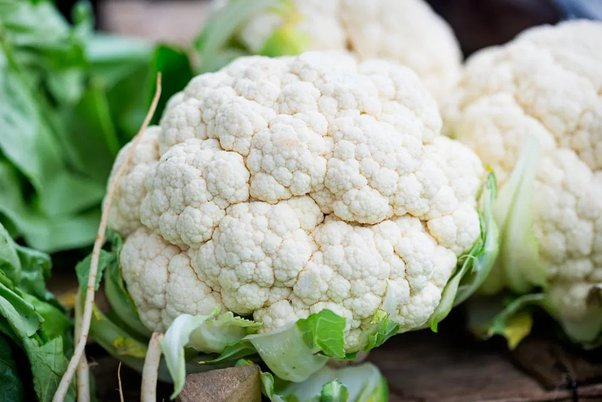
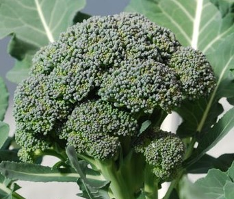

Catalog


White Broccoli
sayuran jenis brokoli putih
yang disebut kembang kol
biasanya disebut cauli

Green Broccoli
sayuran hijau termasuk
jenis kedalam kubis dan dapat di konsumsi
Purpel Broccoli
sayur ukuran sedang,
tumbuh daerah mendapat
penyiaran matahari